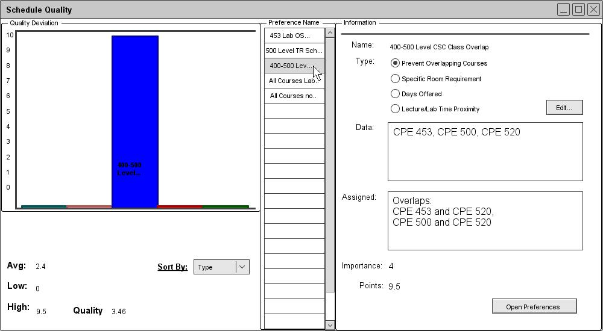
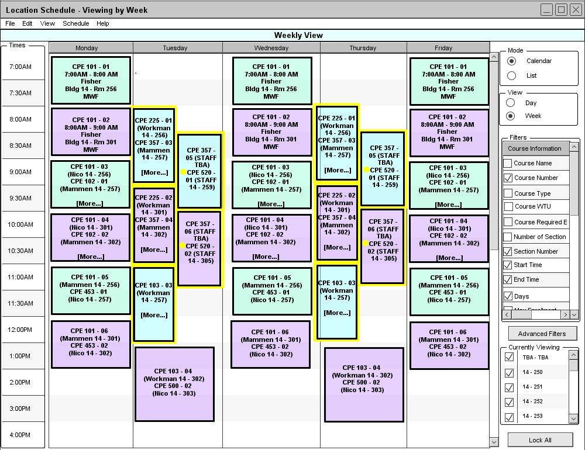
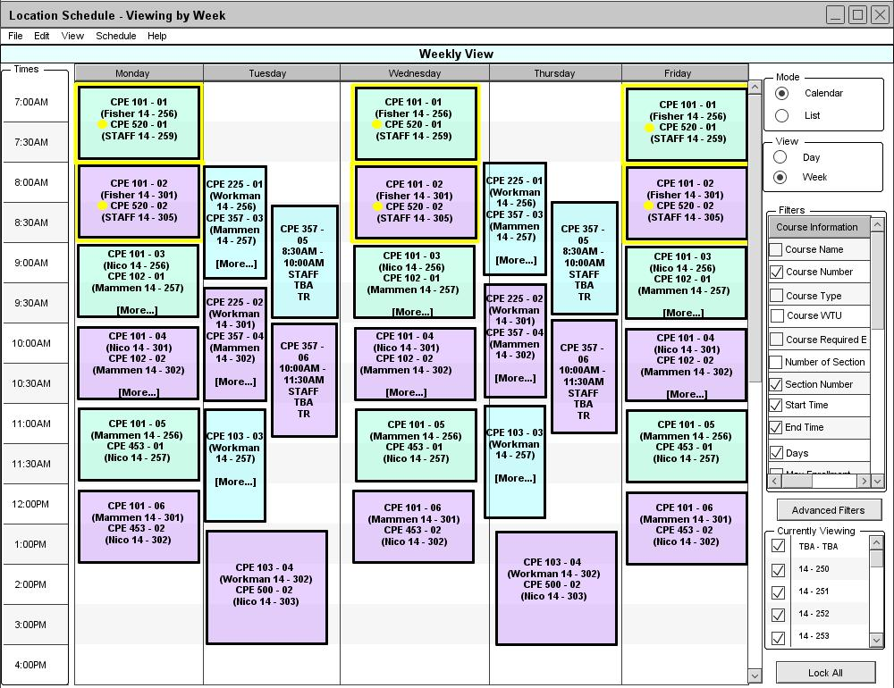
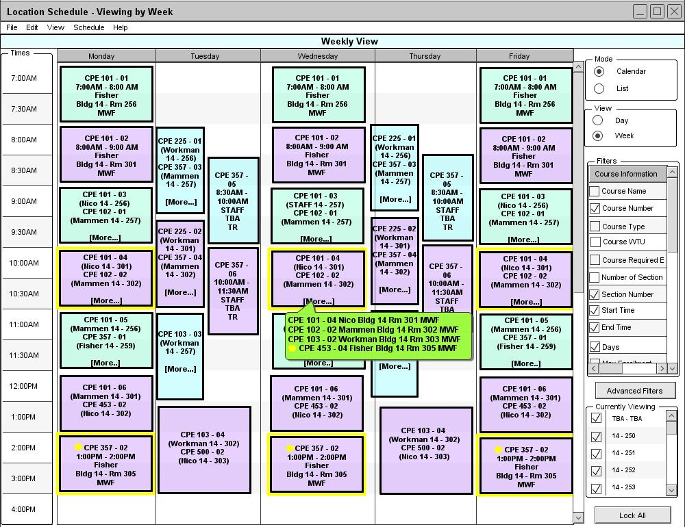
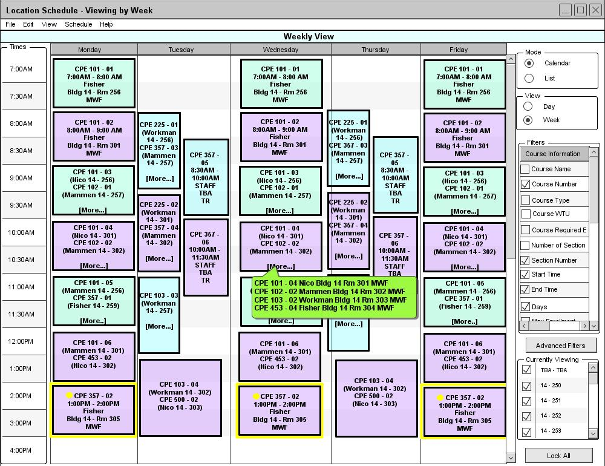
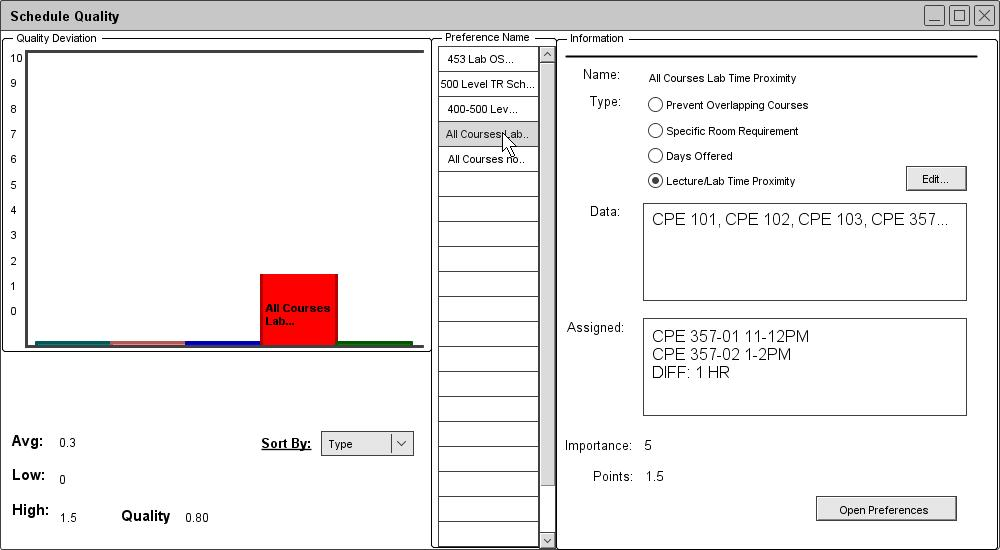

Schedule quality concerns preferences not specified by instructors. The types of preferences defined include non-overlapping courses, a specific room for a course, days a course is offered, and close time proximities for labs and lectures. Like instructor preferences, these preferences are assigned points or scores when they are violated. The score depends on the degree of violation and the importance value of the preference. A low score indicates that a preference has been violated to a small degree. A score of zero indicates that a preference has been completely satisfied. The scores for all preference violations accumulate and are used to calculate an overall quality value for a schedule. An administrator may be interested in the highest and lowest scores to see which preferences are being overly favored or neglected. The administrator can tweak the Scheduler's preferences and databases to help generate a higher quality schedule.
The next examples will use the schedule from Appendix A. The preferences used in its generation are as follows:
1. The lab sections of 101, 102, 103, and 453 require equipment found in any of these lab rooms in the room database: 14-301, 14-302, or 14-303. (Importance: 6)
2. 500 Level Courses should follow a TR schedule. (Importance: 6)
3. Upper-division courses (400/500 level) should not overlap. (Importance: 4)
4. A course's lab section should immediately follow its lecture section. (Importance: 5)
5.
Different sections of the same course should not overlap. (Importance: 9)
For the next examples, the following instructor preferences are also relevant:
1. Instructor Fisher's ranking for 12:00PM-1:00PM is 1. (This is his lunch break.)
2.
Instructor Fisher's ranking for all other time slots after 11:00AM is 4. (He prefers teaching in the morning.)
When the administrator selects Quality from the View drop-down menu, the Schedule Quality window opens.

Figure 60: Schedule Quality.
In figure 1, the Schedule Quality window lists the preferences in the Preference Name scroll pane. With the Sort by combo box, the administrator can choose to sort the preferences by type, name, or amount of deviation. The administrator can select a preference to view its information on the right. In addition to the usual information for a preference, the Assigned textbox also displays how well the preference is satisfied. The administrator can press the Edit button to open a window for editing the selected preference. The Open Preferences button opens the Preferences window. For details on viewing and editing preferences, refer to section 2.4.1. Preferences. Each preference is assigned points based on the degree to which it is violated. Statistics on the left display the highest, lowest, and average score among all the preferences. A quality value for the entire schedule is calculated and displayed based on all the scores. The score for each preference is also dislayed in a bar graph.
For this schedule, there is only one preference violation. Since CPE 520 overlaps both CPE 453 and CPE 500, the preference violation is assigned a large amount of points which is displayed in the graph. The overall quality of the schedule is worsened. The administrator can view this preference violation on the actual schedule.

Figure 61: Overlapping 400/500 level classes.
In Figure 61, the preference violation is displayed in the schedule. A preference violation is a conflict and is displayed in the same way as a constraint violation. The difference is the color; the boxes of the affected courses are highlighted in yellow and a yellow circle appears next to each course name. Like constraint violations, more details for a preference violation is displayed in a full course information popup. Refer to section 2.5. Viewing a Schedule for more details on viewing courses.
There are many ways for an administrator to attempt to resolve a preference violation. One such method is increasing the importance value of the violated preference and re-generating the schedule. For an example of editing a preference, see section 2.4.1.2 Edit Preferences. In this case, the administrator chooses to increase the importance value of the 400/500 non-overlapping preference from 4 to 8. The administrator then selects Generate from the menu and a new schedule appears.

Figure 62: Days Offered Preference Violation.
In Figure 62, the overlapping courses preference violation is resolved but a new preference violation appears. CPE 520 is now offered on MWF and no longer satisfies the preference to have 500 level courses on TR. When increasing the importance value of one preference, it may take priority over another during the generation of a new schedule. Another method that an administrator can use to resolve preference violations is to change instructor preferences. The schedule generation algorithm tries to take both schedule preferences and instructor preferences into account, so they compete with each other. The administrator here decides to change Instructor Fisher's rankings for time slots after 11:00AM from 4 to 6. When the administrator selects Generate, another new schedule appears.

Figure 63: Room Requirement.
In Figure 63, Instructor Fisher's CPE 453 lecture and lab are moved from 8:00AM-11:00AM TR to 9:00AM-11:00AM MWF. (The administrator must click [More...] to see the course in its new location.) Instructor Fisher's CPE 357 lecture on MWF is pushed down to 11:00AM-12:00PM and its lab to 1:00PM-2:00PM. As a result, CPE 520 can now take the 8:00AM-11:00AM TR slot. The old preference violation is resolved but two new ones are created. The first violation is the room requirement for CPE 453. The course now occupies the same time slot as CPE 101, CPE 102, and CPE 103. This can be verfied in Appendix A. Therefore, CPE 453 can only be assigned room 14-305 which does not satisfy the room requirement preference. The lab for CPE 357 does not immediately follow its lecture, thereby creating the second, new preference violation. This results from Fisher's abhorrence of teaching from 12:00PM-1:00PM. The first preference violation can be resolved easily if the administrator is able to and willing to add another room to the database. For details on adding a room to the database, refer back to section 2.3.3.1. Adding a Room. In this case, the administrator decides to add room 14-304 to the database. This room has the same equipment as rooms 14-301, 14-302, and 14-303. The administrator then re-gernerates a new schedule.

Figure 64: Lecture/Lab Time Proximity.
In Figure 64, CPE 453 is assigned the newly-added room and the first preference violation is resolved. However, the lecture/lab proximity violation remains. Since the lab is only one hour ahead of the lecture, the administrator may choose to leave the schedule as it is. When the administrator selects Quality under the View menu, the Schedule Quality window again opens.

Figure 65: Improved Schedule Quality.
In Figure 65, the Schedule Quality window indicates that there is still one preference violation. However, the degree of violation is small due to the 1-hour time proximity of CPE 357's lab and lecture. The schedule's overall quality is only slightly worsened.. The administrator may be satisfied with this schedule despite the preference violatioin. Due to the limited number of instructors, rooms, and time slots, it is likely that an administrator can only minimize and balance out preference violations rather than resolve them all.
Prev: schedule-fairness | Next: viewing | Up: schedule-attributes | Top: index